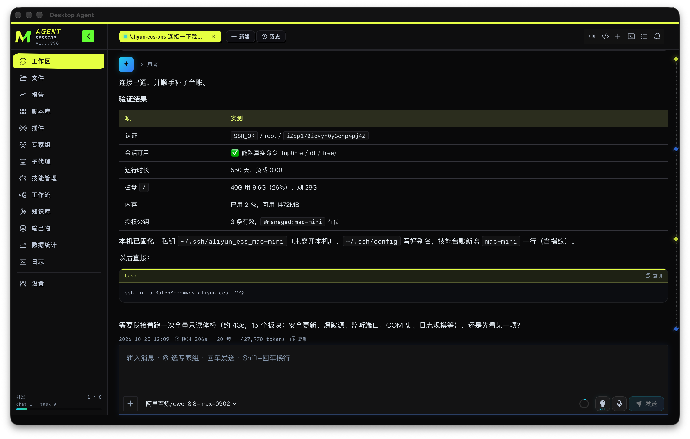

自然语言 → 可执行脚本
浏览器场景默认产出 playwright-cli 命令序列，复杂逻辑落 Python。跑通即入库，下次直接调用。
❯
Desktop Agent 是面向业务人员的桌面智能体平台。你用自然语言描述需求，也可以附上截图、录屏或页面元素， AI 会理解意图、编排工具、边做边调，最后把整个过程沉淀为可复用的脚本与工作流。
每一步都看得见，随时能打断、能纠偏 —— 不是黑箱代跑，而是一个可以协作的工程伙伴。

工具与技能分离，按需渐进加载。同一个对话入口，覆盖浏览器自动化、脚本沉淀、多代理协作与知识积累。
浏览器场景默认产出 playwright-cli 命令序列，复杂逻辑落 Python。跑通即入库，下次直接调用。
有头浏览器全程可见，支持登录态缓存、多页采集与反爬 fetch。过程可标注纠偏 —— 看到它点错了，直接说，它当场改。
playwright-cli · scrapling · 会话池隔离常驻工具 → 技能索引 → 入口文档 → 激活工具组。用到才加载，上下文不被撑爆。
skill_find 唯一入口 · 热更新可并行子目标画成 fork-join DAG，多个 worker 同时跑，各自带独立工作区与验收。
DAG · 专家组 · 验收回路YAML 域对象结构化沉淀网站、品牌、取数口径。AI 可读写，跨会话记得住上次的结论。
YAML 域 · BM25 + 语义检索跑通的流程固化成任务，挂 cron 自动执行。人和 AI 共同维护同一份脚本资产。
task_executor · CPU 动态限流报告、表格、图片、脚本自动归类进工作区，抽屉里一键取用，不散落在聊天流里。
Canvas 报告 · inbox 归档桌面壳与运行时之间只走 localhost 的 REST + SSE。每层职责单一，替换任意一层都不牵动全局。
Chat、任务与脚本库、技能管理、知识库、输出物、日志、设置。高信息密度 Bento 布局，Cyber Dark 视觉。
FastAPI 侧车，用 create_app(...) 装配，不自建路由层。只绑 127.0.0.1，不对外暴露。
基于 AgentScope 2.0.3 的 DesktopAgent。多模型三槽位配置，
多模态吃截图与视频，技能按需渐进加载而非一次性灌满上下文。
五条并行能力通道。默认非激活，用到才展开成真实工具；脚本与知识库形成可积累资产。
统一 SQLite 存储，事件持久化可重放。任务执行按 CPU 动态限流，浏览器会话池与 chat 隔离。
把全部工具塞进上下文，等于每轮都在为用不到的能力付 token。分层加载让 Agent 只在需要时展开细节。
| 层级 | 内容 | 加载时机与代价 |
|---|---|---|
| L0常驻 | 系统工具 · FC schema | 始终在上下文里。数量受控，只放真正高频的：文件、Shell、检索、计划、画布。 |
| L1索引 | <agent-skills> 技能目录 |
只有名字加一行用途。几十个字撑起整个能力地图，Agent 靠它判断该往哪层走。 |
| L2入口 | skill_find read → SKILL.md |
命中意图才读入口文档。包含硬规则、陷阱清单与脚本资产表，是"先读文档再动手"的落点。 |
| L3展开 | load 参考 + activate 工具组 |
真正解锁业务工具与深度参考。不可逆操作前强制加载，避免在未激活工具上硬撞。 |
Harness 以中间件形式接入，不侵入业务逻辑。它管三件事：说清楚、别撞墙、装得下。
信封式 Prompt 块 + 注册表，每轮由 TurnContextBuilder 按序装配，未完成代办自动回灌。
工具连续失败、同参重试、明显停滞时，不硬撞也不静默放弃，而是注入引导让 Agent 换策略。
长会话不靠截断续命。四级机制各管一段，大输出落盘后按需回读，而不是塞满窗口。
大模型厂商按前缀命中缓存计费与加速。若系统提示每轮都在变，前缀就得整段重建 —— 所以 Harness 把提示块按变动频率分成三类，只让该变的变。
soul.mindset · harness.tool_discipline · harness.runtime · skills.loaded · capabilities.loaded
永不改字节
session.env 时钟、规划器闪烁都不会重写前缀；新出现的 hint / memory / 清单只允许追加一次
turn_open 快照
session.file_working_set · task.workflow_draft.progress —— 变动只影响后缀，前缀照常命中
尾部可丢弃
场景切换（chat ↔ execute）会让目录块增减。若把它们放进稳定前缀，每次切换都触发整段重建。
显式 cache_control 标记缓存断点，稳定块进标记系统消息，一次性 hint 拖到真实消息之后。
只认完整单元追加。冻结块必须留在系统单元内，中途丢弃会导致「A+B 然后 A+C」双双失效。
按消息前缀隐式命中。仅极小白名单进标记消息，其余按稳定序排列，避免字典变更插在两个稳定块之间。
模型是可插拔配置，不是硬编码依赖。三类槽位各管一职，失败自动降级； 想完全离线，接本地推理服务即可，无需 API Key。
ollama · llama_cpp · openai_compat
内置无 Key 通道：识别到本地服务时跳过凭证校验，直接探活注册。
Ollama 默认指向 127.0.0.1:11434，llama.cpp 与任意 OpenAI 兼容端点填个 base_url 就能接。
自定义模型面板支持增删改；model_catalog 技能可让 AI 自己完成注册与连通性验证。
primary · utility_mm · fallback
主脑负责推理与工具调用，视觉槽专吃截图录屏，兜底槽在主链失败时接管 —— 三者独立配置，可以全是云端，也可以全在本地。
不只是个聊天窗口。它能主动找你、能被扩展、能自己按时跑，也能直接开口对话。
integrations / weixin
人不在电脑前也能收结果、下指令。配对后长任务跑完直接推到微信，出门在外照样能催它干活。
channel_deliver 作为工作流最后一步extensions / 62 modules
把重复业务做成带界面的插件，钉在侧边栏常驻。脚手架生成、蓝图接入、校验、热重载一条龙。
scheduler / APScheduler
跑通的流程固化成脚本，挂上 cron 就无人值守。巡检、报表、盯盘、备份，交给它按时做。
S2S Realtime · WebSocket
端到端语音直连，不是「录完再转文字」。说话中途想改主意，直接打断它，它当场停下听你的。
下面每一条都是真实会话里发生过的任务，不是演示脚本。
读技能里实测过的连接契约，探端口、验认证、查资源，改 sshd 前必备份 + sshd -t + reload，失败自动回滚。
图片走同模型侧看识别结构，直接产出表格文件归入输出物抽屉，不再手工誊抄。
脚本固化入库，挂 cron 自动执行，结果经 channel_deliver 推到微信或桌面通知铃。
先读 codemap 索引定位注册点，再 Grep + Read 核实调用链，结论带文件行号证据，不凭记忆下判断。
提取、分块、汇总，最终产出 Canvas 结构化报告或 HTML，聊天里只留一两句导读。
可并行子目标画成 fork-join，多个 worker 同时开工，各自独立工作区，回收时逐项验收。
OLED 纯黑底、单一荧光黄主色、等宽字体承担代码与元数据、细描边低圆角。 这个官网本身，就是拿产品的设计 token 直接搭的。
本地字体栈，不引 Google Fonts CDN —— 境内加载不阻塞渲染。
macOS 与 Windows 安装包放在同一个网盘文件夹里，进目录选对应平台的包即可。 下载后双击安装，首次启动会引导你配置模型提供方。